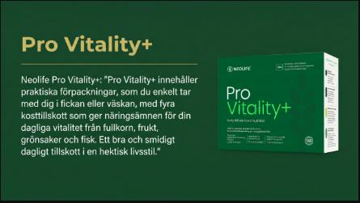
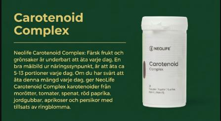
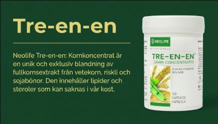
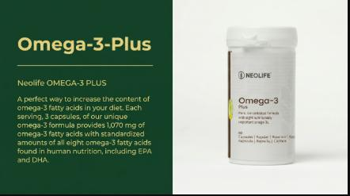
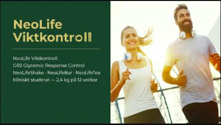
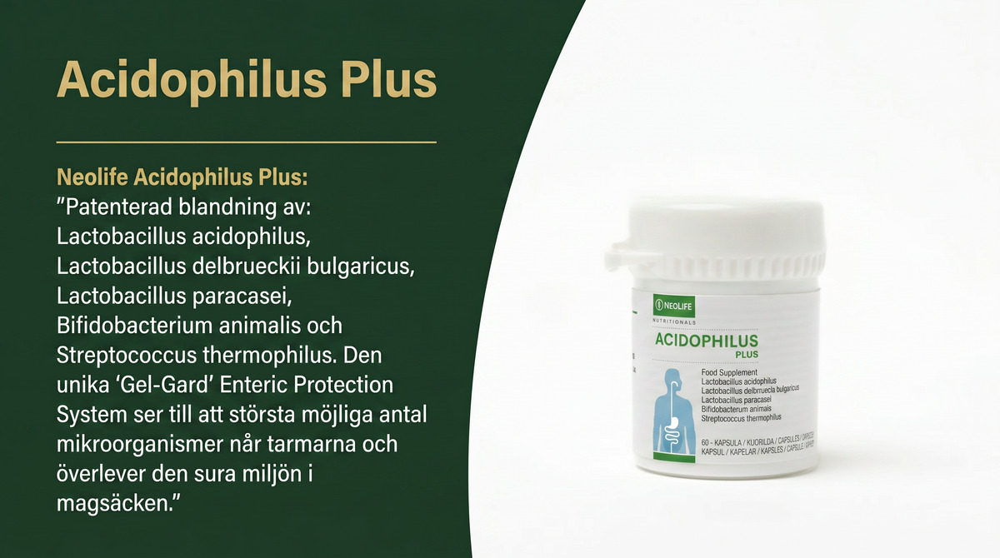

Oberoende NeoLife-distributör — Sponsor-ID: 41-830928
Vetenskapligt baserade kosttillskott och biologiskt nedbrytbar städning sedan 1958. Peer-reviewed forskning, verifierade fakta, inga överdrifter. En oberoende distributörsreferens for den svenska marknaden.
NeoLife är ett direktförsäljningsföretag inom nutrition och hushållsprodukter grundat 1958 av Jerry Brassfield. Det Vetenskapliga Rådet (SAB) — grundat 1976 av Dr. Arthur Furst, Stanford Ph.D. och erkänd som "fadern till modern toxikologi" — styr varje produkt genom tre standarder: Renhet, Styrka och Bevis.
Den här sidan är en oberoende referens driven av en NeoLife-distributör. Den täcker vetenskapen bakom NeoLifes produkter, ärliga inkomstdata för affärsmöjligheten och sakliga jämförelser med standardalternativ på marknaden. Den svenska marknaden för kosttillskott är uppskattad till 3,7 miljarder SEK (2024) med 5% tillväxt — och svenska konsumenter efterfrågar i allt högre grad naturlighet, transparens och vetenskaplig grund.
Svenska marknaden
84% av svenskarna bryr sig om vad de kan göra för miljön. 9 av 10 är oroliga för kemikalier i vardagen. NeoLife möter dessa krav — sedan 1960-talet.
Kosttillskott
Helfodskällor med oberoende peer-reviewed forskning — inte syntetiska isolat eller overifierade påståenden.

Grundsystem
Pro Vitality+
Fyrakomponentsystem för cellulär näring. Tre-en-en, Carotenoid Complex, Omega-3 Plus, Essentiella Vitaminer. 68 års formuleringsvetenskap i ett dagligt paket.
Läs vetenskapen →

Antioxidant · Immunförsvar · Kod 566
Carotenoid Complex
USDA-forskning: 37% ökning av immunkapacitet på 20 dagar. 8 helfodsbaserade karotenoidkällor inkl. lykopen 1 200 mcg och lutein/zeaxantin 410 mcg per portion.
USDA-forskning →

Cellulär näring · 1958 · Kod 510
Tre-en-en Kornkoncentrat
Världens första fytonäringstillskott — 32 år innan begreppet etablerades. Fullkornslipider och steroler från vetegroddar, riskli och sojabönor. Texas A&M 1987.
Cellmembranvetenskap →

Omega-3 · Triglyceridform · Kod 929
Omega-3 Plus
Naturlig triglyceridform — 70% better absorption. 1 069 mg omega-3 per portion: 460 mg EPA, 480 mg DHA, 50 mg DPA. Screenad för 200+ föroreningar varje batch.
Triglycerid vs etylester →

Viktkontroll · Protein · GR2
Viktkontroll
NeoLifeShake: 18g komplett protein per portion, 5g fiber. NeoLifeBar och NeoLifeTea kompletterar programmet. GR2 glykemisk responskontroll — klinisk studie: 2,4 kg på 12 veckor.
GR2-programmet →

Probiotika · Fem stammar · Kod 560
Acidophilus Plus
Fem mjölksyrabakteriestammar — L. acidophilus, L. bulgaricus, L. paracasei, B. animalis och S. thermophilus. 5 miljarder CFU garanterat till tarmarna.
Läs mer →
Rengöring
Fosfatfria, biologiskt nedbrytbara koncentrat innan det krävdes av lagen. LDC ersätter produkter for 228 kr/liter till 8,85 kr/liter.
Rengöring · Koncentrat
Golden Home Care — LDC
Mild, mångsidig rengöring. 1 liter ger 6 liter färdigt medel. pH-balanserat, fosfatfritt. Diskmedel, handtvål och allrengöring i ett.
Kostnad per liter →
Rengöring · Industristyrka
Super 10
3-stegsfunktion: penetrerar, löser, emulgerar. 1 liter ger 11 liter färdigt medel. Från köket till garaget. 700 miljoner plastflaskor forhindrade.
Läs mer →
Hållbarhet
Miljöstandard
70% förpackningsminskning, biologiskt nedbrytbar sedan 1960-talet. Anpassad till UN SDG 6, 12 och 13. Svenska kemikaliebantningskrav uppfyllda sedan starten.
Miljödata →
Forskning & Historia
SAB-ramverket, grundarberättelsen och den peer-reviewed publicationsrekorden bakom varje NeoLife-produkt.
Vetenskap · SAB
Vetenskapliga rådet
10 oberoende forskare sedan 1976. Publicerat i AJCN, JACN, FASEB Journal. Tre standarder: Renhet, Styrka, Bevis.
Möt rådet →
Historia · 1958
NeoLifes historia
Grundat 1958 av Jerry Brassfield. Jim Rohn, Tony Robbins och Mark Hughes kopplingen. DSHEA 1994. 68 år av kontinuerlig drift.
Grundarberättelsen →
Direktförsäljning · Fakta
MLM vs pyramidspel
FTC Koscot-standard, 1979 Amway-avgörandet, WFDSA global data, Direct Selling Sweden: 70 000 säljare, 145M$ omsättning 2023.
Juridiskt ramverk →
Vetenskapsartiklar
Peer-reviewed vetenskap förklarad på svenska — med PMID-referenser och inga overifierade påståenden.
Omega-3
ALA vs EPA vs DHA
Varför växtbaserad omega-3 inte kan ersätta fiskolja. Omvandling under 5% — forskningen förklarad.
Läs →
Karotenoider
Betakaroten: tillskott vs mat
Varför syntetiskt betakaroten och helfodskarotenoider beter sig olika i kroppen. ATBC-studien förklarad.
Läs →
Cellulär vetenskap
Fytosteroler i cellmembran
Bortom kolesterolsänkning — cellmembranmekanismen som ingen förklarar.
Läs →
Hemvård
Är ekostädning greenwashing?
Tensidkemi, biologisk nedbrytbarhet, fosfatvetenskap — ett kemibaserat svar.
Läs →
Immunförsvar · 2025
Zeaxantin och immunförsvaret
2025-forskning: zeaxantin som CD8+ T-cellsaktivator. Vad fyndet betyder.
Läs →
Viktkontroll · Klimakteriet
Viktkontroll i klimakteriet
Hormonella drivkrafter bakom viktuppgång i klimakteriet. Evidensbaserade kostansatser utan GLP-1.
Läs →
Cellulär · Steroler
2g växtsteroler dagligen
Varför det är nästan omöjligt från mat ensam — och vad forskningen faktiskt kräver.
Läs →
Omega-3
Varför fiskolja inte är likvärdigt
De 8 omega-3-fettsyrorna förklarade. Triglycerid vs etylester. Varför form avgör absorption.
Läs →
Redo att prova NeoLife?
Inga försäljningskrav. Börja som kund, utvärdera produkterna och bestäm om distributörspriset är meningsfullt for ditt hushåll.